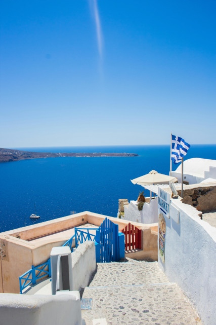

Saída Especial: 19 de Agosto de 2026
Grécia e
Turquia
Uma odisseia inesquecível do Berço da Civilização aos mistérios do Império Otomano, com o charme de Paris.

19
AGO
2026
Ilhas Gregas & Tesouros Turcos
Vivencie o contraste perfeito: a história clássica de Atenas e o mar Egeu em Santorini e Mykonos, combinados com a riqueza cultural de Istambul e as paisagens surreais da Capadócia e Pamukkale. Tudo isso com o conforto de paradas em Paris na ida e na volta.
Destaques do Roteiro:
- Paris: Estadas estratégicas na Cidade Luz na ida e no retorno para suavizar a viagem.
- Grécia Clássica: Visita panorâmica em Atenas e a espetacular Acrópole.
- Ilhas Mágicas: O pôr do sol vulcânico de Santorini e a cosmopolita Mykonos.
- Istambul: Navegação pelo Bósforo, Mesquita Azul, Hagia Sophia e o Grande Bazar.
- Capadócia: As incríveis Chaminés das Fadas e o Museu ao ar livre de Göreme.
- Tesouros Naturais: As piscinas de algodão de Pamukkale e as ruínas de Éfeso.